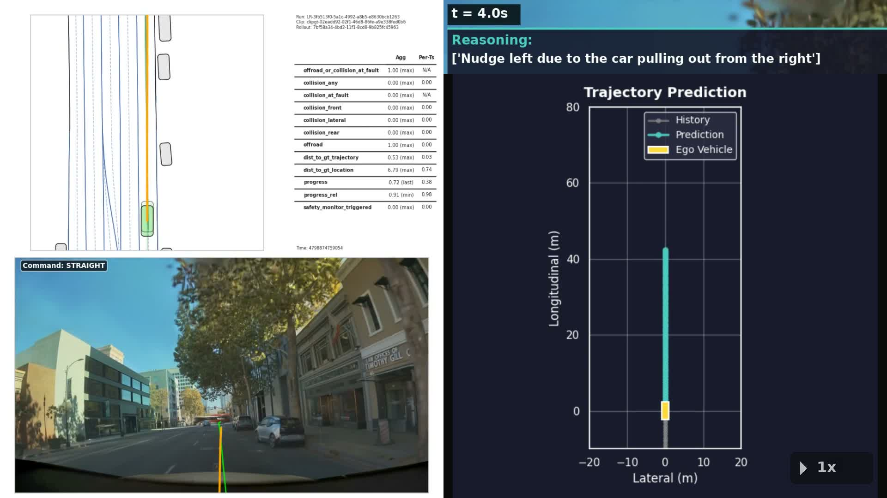
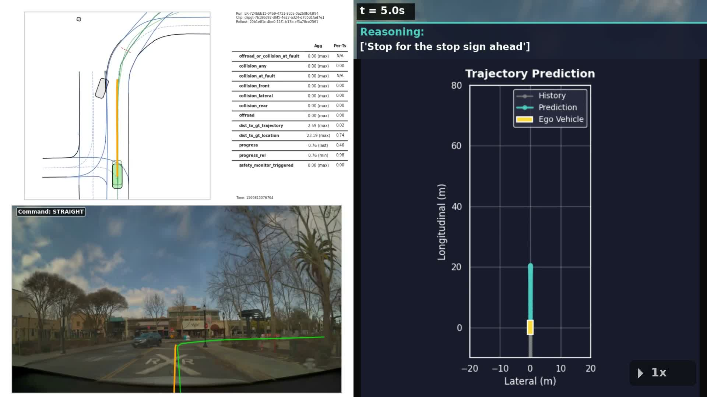

Architecture, the Cosmos Reason 2 backbone, and the AlpaSim closed-loop simulator that puts it all to the test.
Self-driving cars have improved dramatically on frequent situations — highway lane keeping, freeway following, simple intersections. The hard part remaining is the long tail: rare scenarios that human drivers handle by reasoning, not reflex. A construction zone where cones encroach into the lane. A pedestrian stepping off the curb between parked cars. A right-turning bus that suddenly stops, blocking your lane. These cases are where most autonomous-vehicle programs lose their nerve and disengage.
NVIDIA's Alpamayo family of models is one answer to this: a reasoning Vision-Language-Action model that, alongside its trajectory output, emits a written chain of causation — short text explaining what it observed, what it inferred, and why it chose the action it did. This makes the model's decisions inspectable in a way earlier end-to-end driving networks never were.
To understand Alpamayo 1.5 in isolation is impossible — the model relies on two other open NVIDIA components, and the only way to actually run it on real driving data is through a third. The three pieces:
Read the chapters in order for the cleanest mental model: driver first, then the brain inside it, then the simulator that exercises it on real scenes.
A traditional end-to-end driving network is a function: cameras → trajectory. There is no intermediate language layer. If the model swerves to avoid an obstacle that wasn't actually there, you cannot easily ask it why; you can only retrain. A reasoning VLA is a function with a witness: cameras → (trajectory, written reasoning). The reasoning text is generated alongside the action and is causally linked to it during training, so the same internal computation that decides the action also produces the explanation.
Concrete example from a real Alpamayo run on a construction-zone scene (extracted from the model's rollout.asl binary log):
Notice the structure: action ("slow down to create a gap"), cause #1 ("right lane narrows"), cause #2 ("car alongside blocks merge"), and an implicit plan ("merge once the gap forms"). This is the unit of output that, scaled across hundreds of timesteps, makes the model's policy auditable.
Alpamayo 1.5 is a modular VLA: a vision-language backbone produces a latent representation of the scene plus a reasoning text stream, and a separate diffusion-based decoder turns that representation into a future trajectory. The two halves are trained jointly so that what the model says and what it does are tied together.
<think> tags during training so the reasoning is grounded in the action that follows.Alpamayo R1 (the December 2025 release) and Alpamayo 1.5 (March 2026) share the modular VLA shape — Cosmos backbone + diffusion action decoder — but the 1.5 release made several improvements visible from the model card:
| Aspect | Alpamayo 1.5 |
|---|---|
| Total parameters | ≈ 10.5 B (8.2 B backbone + 2.3 B action decoder) |
| Driving footage | ≈ 80,000 hours, multi-camera |
| Images | > 1 billion |
| Reasoning traces | ≈ 3 million chain-of-causation traces (mostly auto-labeled by VLMs, curated with human-in-the-loop) |
| Trajectory data | 10 Hz sampling across all 80 k hours |
| Closed-loop benchmark (AlpaSim) | 0.81 ± 0.01 over 910 NuRec scenarios |
| Open-loop benchmark | minADE @ 6.4 s = 1.11 m on PhysicalAI-AV (937 challenging samples) |
| Hardware to run inference | 1 GPU, ≥ 24 GB VRAM (RTX 3090/4090/A5000) — tested on H100 |
| License (weights) | NVIDIA non-commercial; inference code Apache 2.0 |
Source: Alpamayo-1.5-10B model card; arXiv 2511.00088 (Alpamayo R1 paper).
Cosmos Reason 2 is NVIDIA's open vision-language model purpose-built for "physical AI" — robots, autonomous vehicles, and any agent that has to act in the real world. Where most VLMs are trained on web-scale image-text pairs, Cosmos Reason 2 is post-trained on physical-AI datasets: ego-centric video, sensor logs, robotics trajectories, AV scenarios. The result is a model that has learned not just what's in a scene but how the scene's elements behave in time, and what the consequences of an action would be.
Cosmos Reason 2 ships in three sizes (2 B, 8 B, 32 B). Alpamayo 1.5 uses the 8 B variant as its backbone — large enough to handle long video context and complex reasoning, small enough to fit alongside the action decoder on a single H100.
Cosmos Reason 2 did not start from scratch. NVIDIA took the open-source Qwen3-VL-8B-Instruct model — already a strong general-purpose vision-language model from Alibaba — and continued training it on physical-AI-specific data (autonomous driving clips, robotics trajectories, ego-centric video). The post-training is what specializes it: the same architecture, but the weights have been pulled toward physical reasoning.
You could in principle build a driving VLA on any large vision-language model. Cosmos Reason 2 has three properties that made it the right choice for Alpamayo:
<think> tags. That makes Alpamayo's reasoning-first-then-action structure clean to wire up — no prompt engineering gymnastics.Source: Cosmos-Reason2-8B model card; cosmos-reason2 GitHub.
You cannot evaluate an autonomous-driving model the way you evaluate, say, an image classifier. Driving is closed-loop: the model's action at time t changes what it sees at time t+1. A trajectory dataset can tell you how close the model's predictions match a recorded human driver, but it cannot tell you whether the model would actually drive the same scene end to end without crashing.
AlpaSim solves this by replaying real driving scenes in closed loop. Each scene is a 20-second clip from the NuRec dataset — a high-fidelity 3D reconstruction of an actual recorded drive. AlpaSim hands the recorded sensor stream to the driver model, lets the driver issue trajectories, integrates physics, and re-renders the scene from the driver's resulting pose. The other agents in the scene (cars, pedestrians) replay their recorded trajectories regardless of what the ego does. So if Alpamayo nails the trajectory, the scene unfolds normally; if Alpamayo deviates, the world stays where it was, and AlpaSim's eval pipeline reports the divergence.
rollout.asl.NuRec ("NeUral REConstruction") is NVIDIA's open dataset of high-fidelity 3D reconstructions of real driving clips. Each clip is a 20-second drive captured by an NVIDIA test vehicle in one of 25+ countries, then reconstructed into a USD-format 3D scene that AlpaSim can re-render from arbitrary ego poses. The dataset ships with per-scene metadata labels (behavior, layout, weather, vrus, traffic_density) that let you filter for the kinds of scenes you want — construction zones, intersections with pedestrians, highway merges, etc.
The current public release contains hundreds of scenes across the 25.07 and 26.02 batches, all gated on HuggingFace and downloaded on demand by the AlpaSim wizard.
After a closed-loop run, AlpaSim emits:
rollout.asl — a length-delimited protobuf log of every gRPC message exchanged. Includes per-step driver requests, driver returns (with reasoning text in the unstructured debug field), traffic, physics, controller poses. This is the canonical record of what happened.metrics.parquet and aggregate metrics_results.txt — collision rates, off-road, distance to ground-truth trajectory, plan deviation, progress.Source: AlpaSim Tutorial.
The clearest way to internalize all three pieces is to walk through one closed-loop step in detail. Here is what happens between sim-time t and t + 100 ms:
Two things to note about this loop:
The screenshots below are from two scenarios run on Alpamayo 1.5 in AlpaSim, captured from this project's reproduction artifacts.
Scene ID clipgt-02eadd92-... from NuRec — an urban drive with a slow lead truck, a red traffic light, parked vehicles encroaching from the curb, and a pedestrian crossing. This is the same clip NVIDIA features in Figures 1, 2, and 11 of their developer blog.

The same model emitted ~30 distinct reasoning chains across a 20-second window, each tied to a 100 ms decision step.
Scene ID clipgt-7b186d92-... — selected by filtering NuRec's labels for layout=intersection,pedestrian_crossing, vrus=true, weather=clear/cloudy, surface=dry, lighting=daytime. Daytime urban intersection with stop signs, bollards, and a marked crosswalk with active pedestrians.

Notice the diversity: the model distinguishes why it stops (pedestrian vs stop sign vs bollard vs red light) and why it turns (one-way sign vs median blocking the straight path). That fine-grained causal vocabulary is the contribution of the chain-of-causation training data — 3 million traces in Alpamayo 1.5's training set.
After AlpaSim finishes, the output directory for one scenario contains:
scenario_construction/
rollouts/clipgt-02eadd92-.../<run-uuid>/
rollout.asl 368 MB binary protobuf log
*_camera_front_wide_120fov_default.mp4
*_camera_front_wide_120fov_reasoning_overlay.mp4
metrics.parquet
aggregate/
metrics_results.txt eval summary
metrics_results.parquet
videos/all/00_all_clips_fast.mp4
controller/ driver/ telemetry/ txt-logs/
driver-config.yaml eval-config.yaml docker-compose.yaml ...The rollout.asl is the canonical record. Each entry is a length-delimited protobuf LogEntry message; the driver_return variants carry the reasoning text in their unstructured debug field. Parsing it requires the AlpaSim utilities (or the ad-hoc Python recipe in this project's repository).